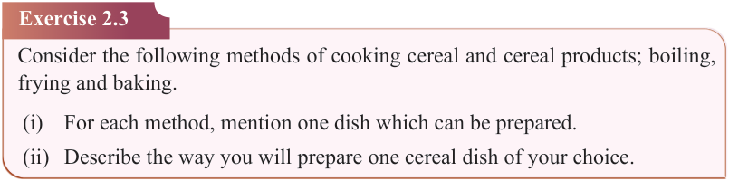
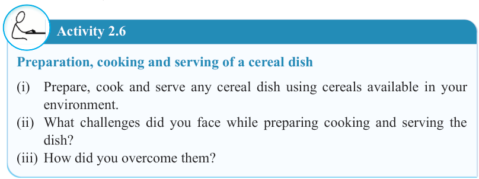

31


Food and Human Nutrition

Form Two


(vi) It allows even and uniform cooking. Ovens distribute heat evenly, resulting in consistent colour and texture, especially in bulk cooking.
(vii) It saves fuel and time. Multiple or bulky items can be baked at once, making it fuel-efficient.
(viii) It requires minimal attention. Once in the oven, food needs little supervision thus allowing time for other tasks.
Disadvantages of baking
(i) Time-consuming: Baking often takes longer compared to other cooking methods like frying or boiling.
(ii) Consumes more energy: Ovens use a lot of electricity or gas, making baking less energy efficient.
(iii) Requires special equipment: Baking often requires specific tools like mixers, baking tins, and ovens, which may not be available in all households.
(iv) Limited to certain foods: Not all foods can be baked; it is mainly suitable for foods such as breads, cakes, pastries, and certain meats.
(v) Health risks from overconsumption: Many baked goods are high in sugar, fat, and refined flour, which can contribute to health problems if consumed excessively.
Activity 2.6
Preparation, cooking and serving of a cereal dish
(i) Prepare, cook and serve any cereal dish using cereals available in your environment.
(ii) What challenges did you face while preparing cooking and serving the dish?
(iii) How did you overcome them?
Exercise 2.3
Consider the following methods of cooking cereal and cereal products; boiling, frying and baking.
(i) For each method, mention one dish which can be prepared.
(ii) Describe the way you will prepare one cereal dish of your choice.
17/09/2025 16:30